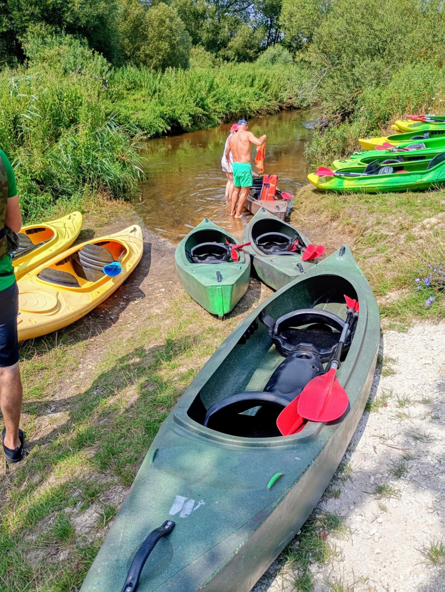
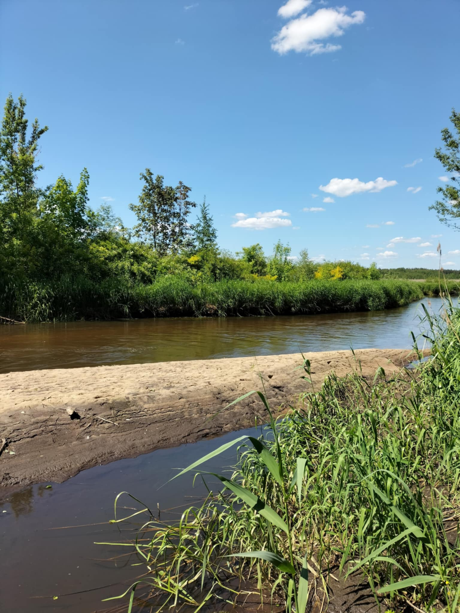
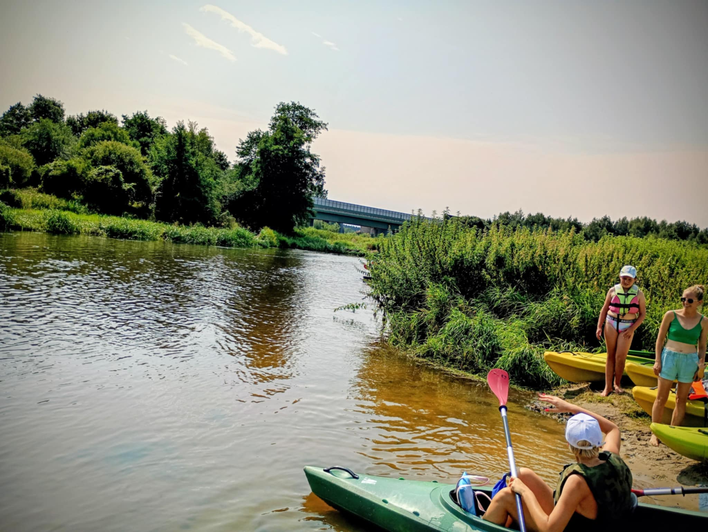
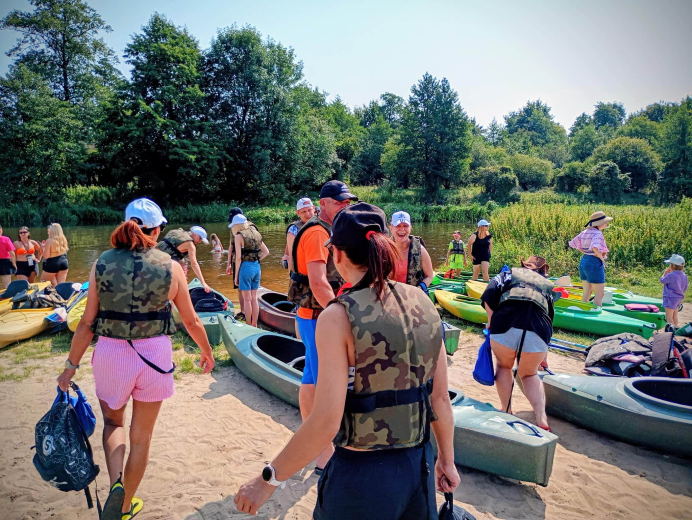
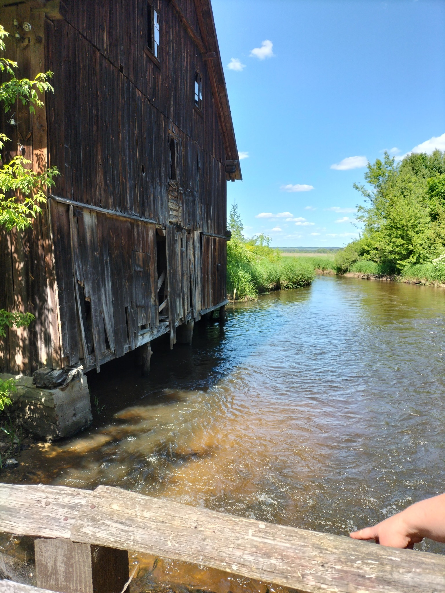
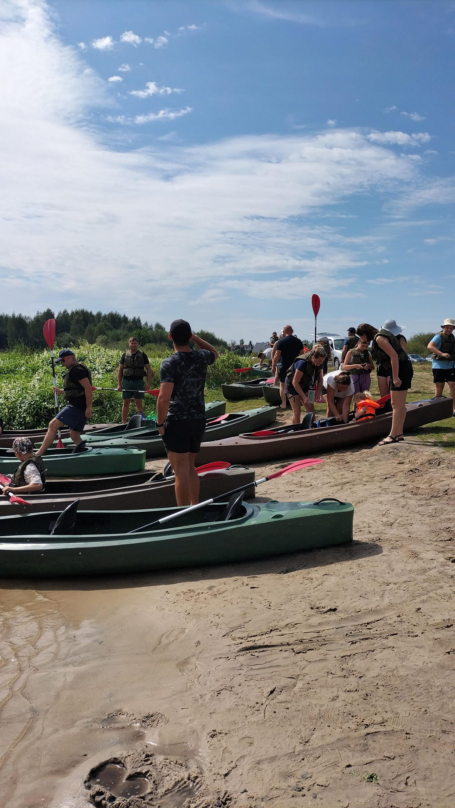
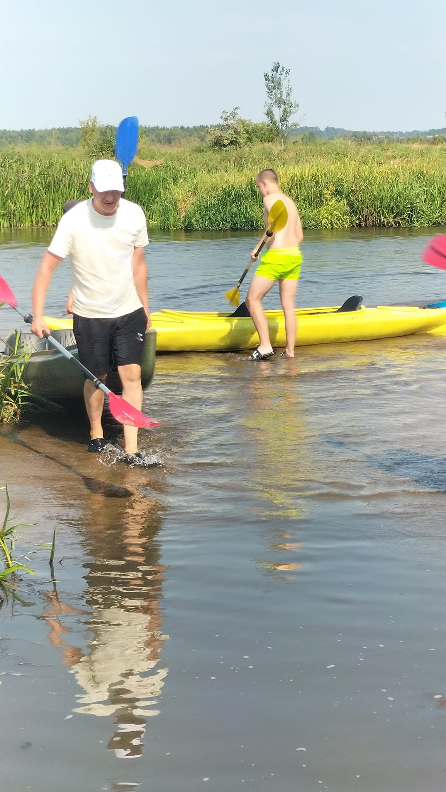
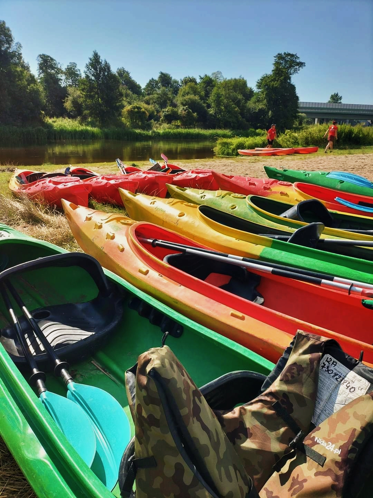

Wiosełko
Wypożyczalnia Kajaków
Świętokrzyskie
Płyń z nami przez Nidę
Rodzinna wypożyczalnia kajaków w sercu Ponidzia. Transport, kamizelki i dobra energia w cenie.
7–22
km tras
120
zł / kajak
5
miejsc startu
Rodzinna wypożyczalnia kajaków w sercu Ponidzia. Transport, kamizelki i dobra energia w cenie.
Nie szukasz kajaka. Szukasz chwili, w której w końcu nic nie musisz.
Działamy w Miąsowej, w sercu Ponidzia — regionu pięknego, cichego i wciąż mało odkrytego. Oferujemy spływy rzekami Nidą i Białą Nidą dla rodzin, par i grup przyjaciół.








Od krótkiej rekreacyjnej przejażdżki po całodniową wyprawę — każdy znajdzie coś dla siebie.
Żebyś mógł skupić się na płynięciu, a nie martwić się czy czegoś nie zapomniałeś.
Super spływ, wszystko dopięte na ostatni guzik. Organizacja na najwyższym poziomie, sprzęt czysty i w dobrym stanie. Zdecydowanie wracamy!
Profesjonalna obsługa, piękna trasa i rodzinna atmosfera. Polecam każdemu kto chce odpocząć od miasta i poczuć przyrodę Ponidzia.
Byłem z rodziną, dzieci zachwycone. Trasa świetnie dobrana do możliwości całej grupy. Właściciel pomocny i życzliwy. Gorąco polecam!
Niesamowite widoki, cisza i spokój. Kajaki w idealnym stanie. Organizacja bez zarzutu — transport zadbany, wszystko punktualnie. Wracamy za rok!
Cudowny dzień na wodzie. Piękna okolica, świetna obsługa. Dzieci wyjątkowo zadowolone. Polecamy całą rodziną!
Połącz spływ ze zwiedzaniem — okolica ma wiele do zaoferowania.
Zadzwoń lub napisz — ustalimy trasę, termin i szczegóły.